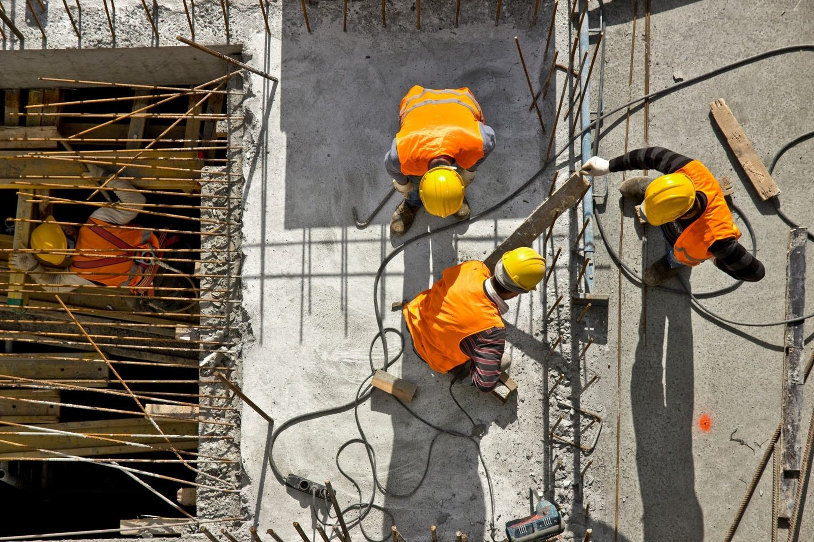
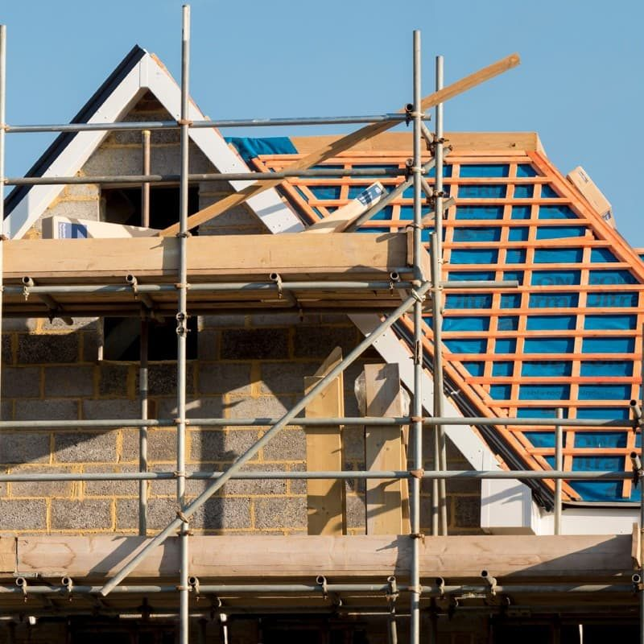
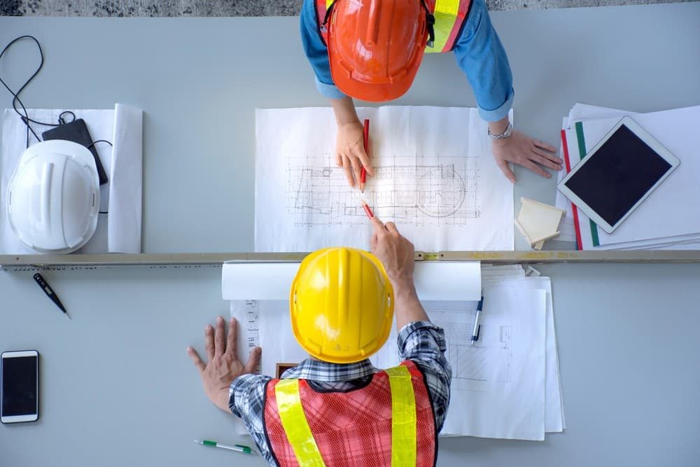
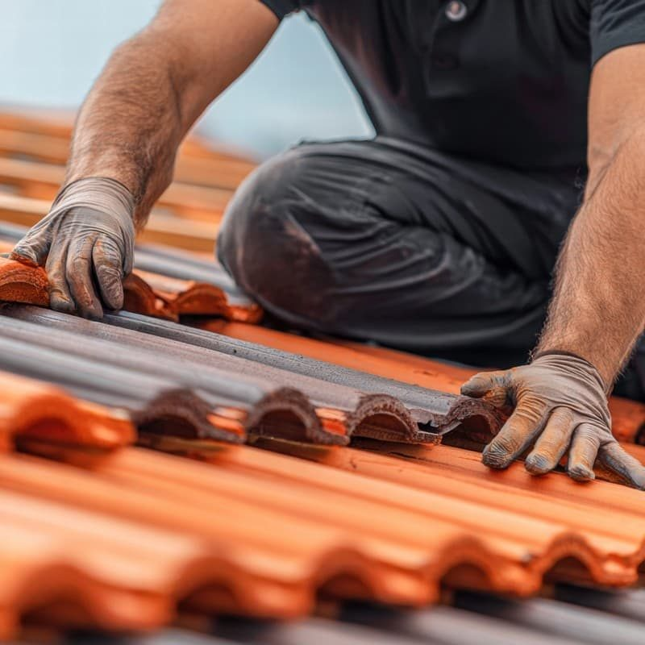
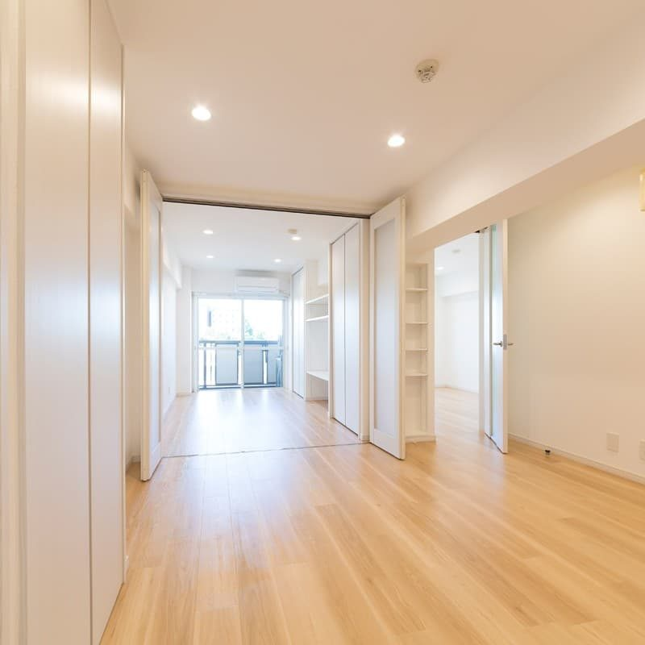
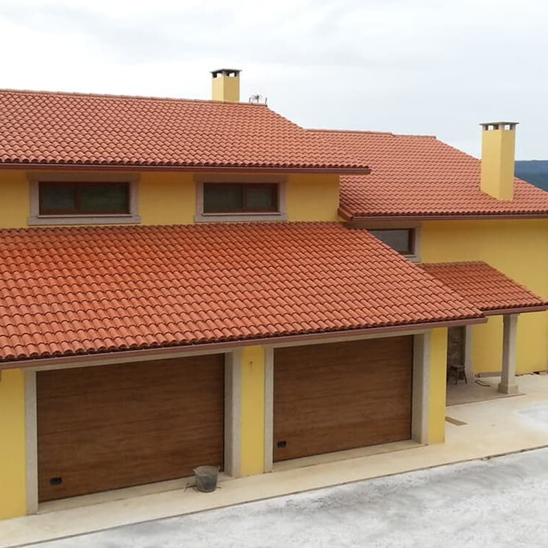
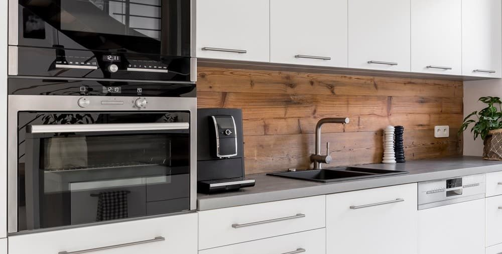
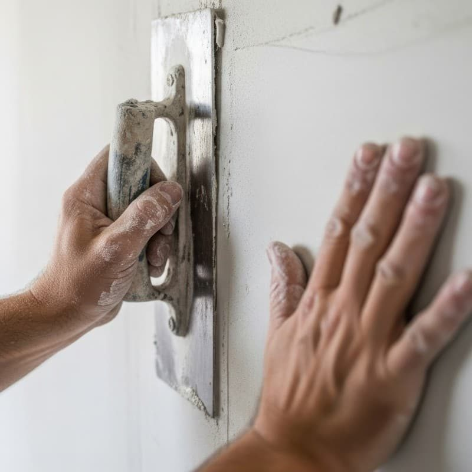

En la comarca de Ferrol desde 2006
Construcción y reformas en Ferrol y comarca
Obra nueva, reformas, cubiertas y fachadas con equipo y maquinaria propios. Revisamos su tejado con dron y le damos el presupuesto después de ver la obra.

Servicios de obra
Un mismo equipo hace la albañilería, la fontanería, la electricidad y la pintura.
- Obra nueva
Viviendas, locales y naves.
- Reformas y rehabilitaciones
Integrales o parciales, interior y exterior.
- Cubiertas, fachadas y canalones
Limpieza y reparación, revisadas con dron.
- Proyectados
Aislamiento e impermeabilización a presión.
- Hormigón impreso y pulido
Patios, accesos, garajes y suelos de nave.
- Comunidades y otros trabajos
Pladur, desatascos, fosas sépticas y cierres.

Una obra con nosotros, en tres pasos
-
Vemos la obra y le damos precio
Vamos a la obra, medimos y, si es un tejado, subimos el dron. Después le pasamos un presupuesto ajustado a lo que quiere hacer.

-
Hacemos la obra con equipo propio
Trabajamos con nuestra propia maquinaria, sin esperar a que haya alquiler libre. Cada oficio lo hace alguien de la casa.

-
Entregamos la obra limpia
Le entregamos la obra limpia. Si después necesita revisar canalones o la fachada, volvemos el mismo equipo.

La empresa
Desde 2006 trabajamos en Ferrol, Narón y San Sadurniño con equipo y maquinaria propios. En un tejado subimos primero el dron, y el presupuesto llega cuando ya hemos visto la obra.
Obra nueva, reformas y acabados
De la vivienda entera a la cocina o el suelo del garaje.


Presupuesto para su obra
Cuéntenos qué obra tiene en mente y dónde está. Le llamamos para quedar y verla.
Teléfono y WhatsApp: 636 527 124 o 616 183 679.
Oficina en la Ctra. Ferrol–Viveiro, O Casal, San Sadurniño.
Tejados revisados con dron
Lo usamos para fotografiar tejados y fachadas y ver hasta dónde llega el daño antes de dar precio.
Yeso y mortero proyectados
Yeso, mortero o aislante lanzado a presión con máquina. Agarra mejor que a mano y queda más uniforme.
Canalones, cierres y fosas
También hacemos canalones, cierres de finca, fosas sépticas y mantenimiento de comunidades.
